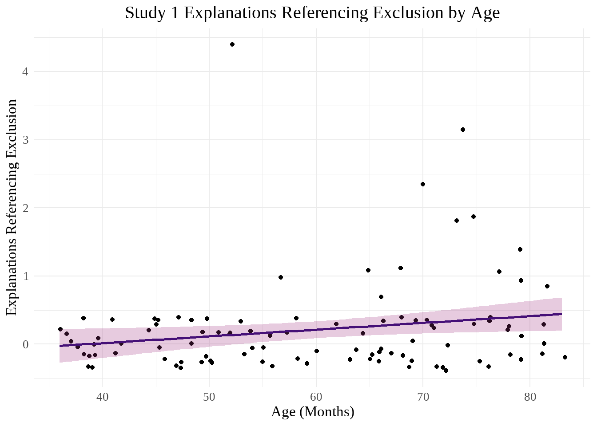
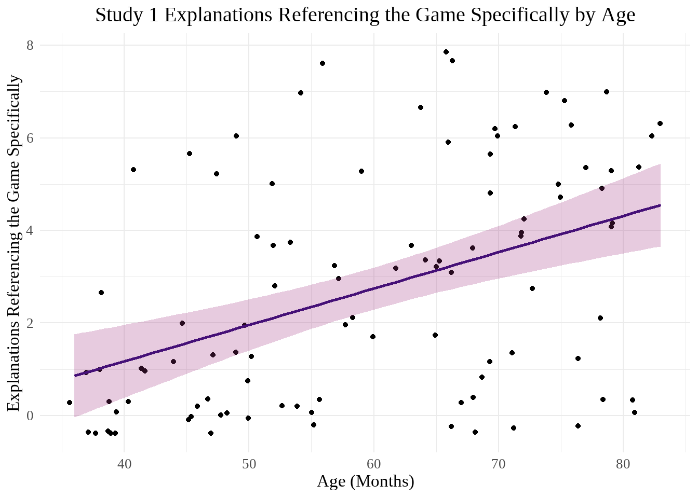
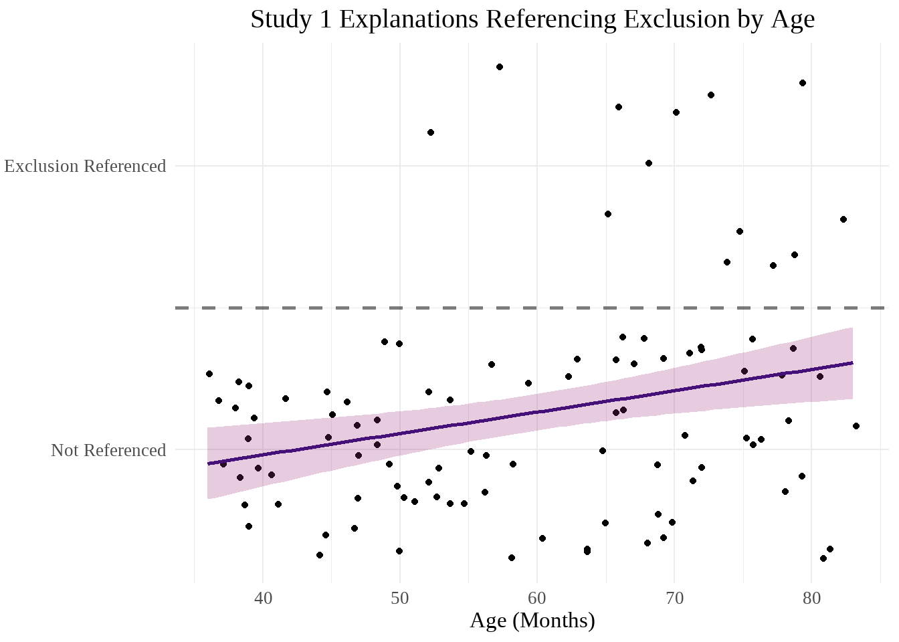
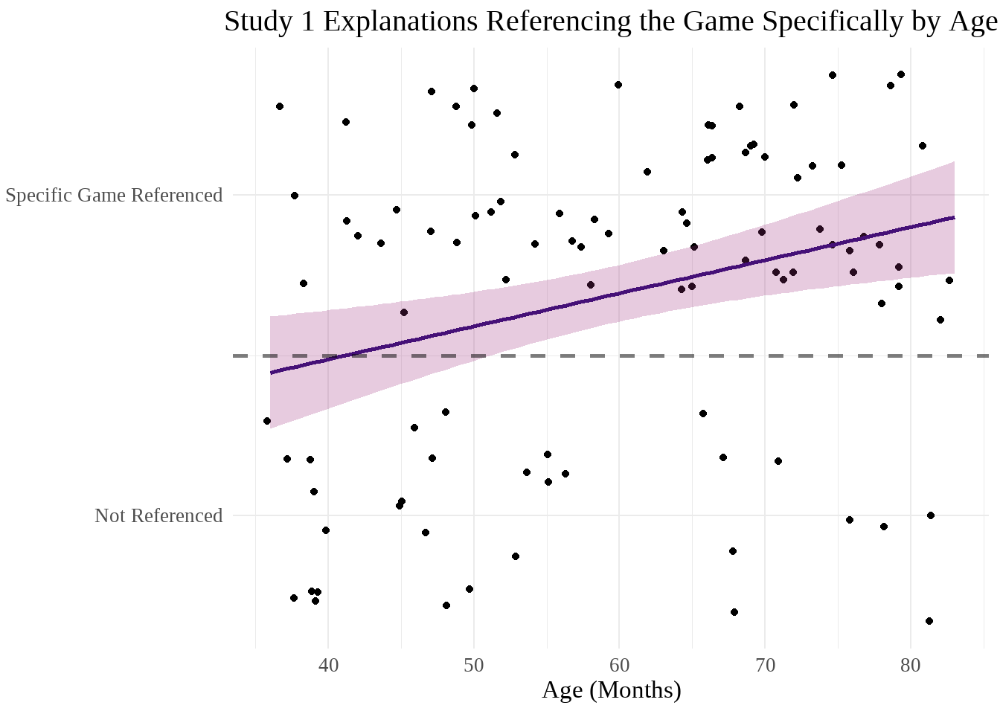
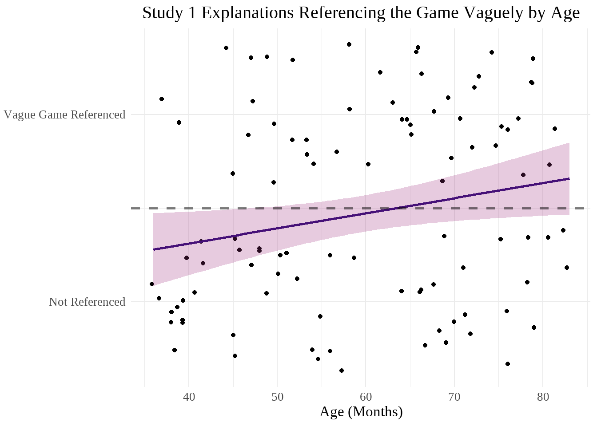
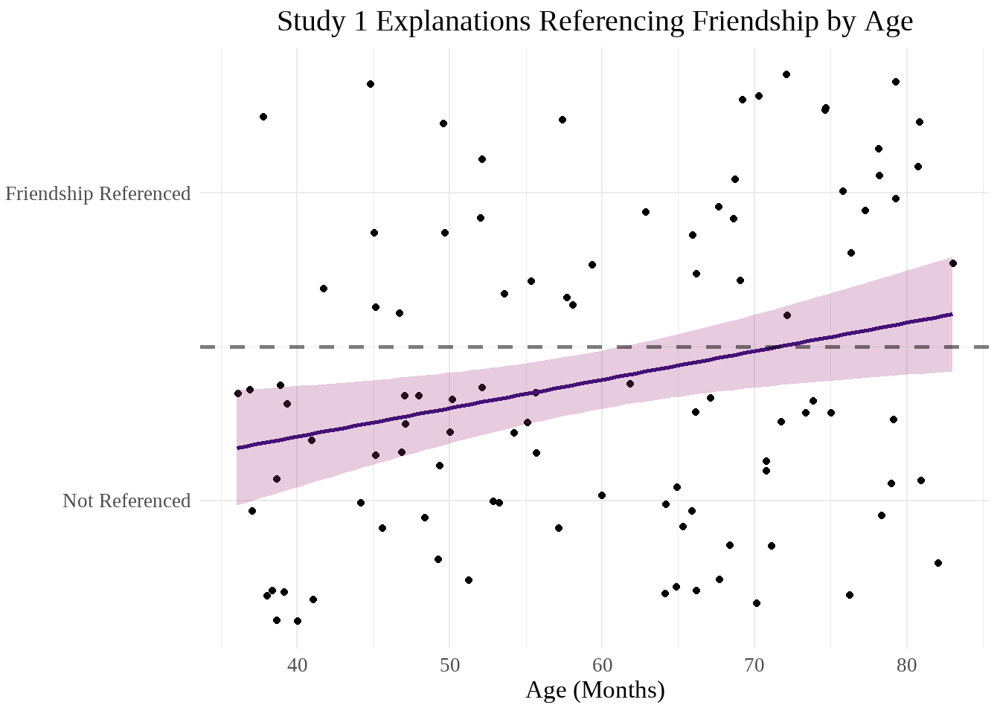
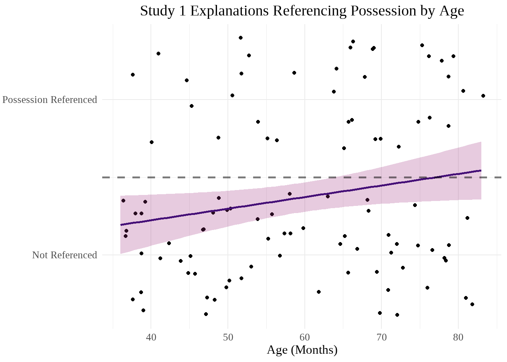

library(readxl)
library(tidyverse)
library(lme4)
library(lmerTest)
library(showtext)
library(viridis)
library(chisq.posthoc.test)
showtext_auto()02 SEAS Study 1 Exploratory Analyses
Packages
Data Preparation
magma_colors <- c("#000004FF", "#180F3EFF", "#451077FF", "#721F81FF", "#9F2F7FFF", "#CD4071FF", "#F1605DFF", "#FD9567FF", "#FEC98DFF", "#FCFDBFFF") #from magma(10)seas_full <- read_excel("../Data/FINAL SEAS V1 Dataset.xlsx")
seas <- filter(seas_full, final_data == "Y") #filtering out excluded participantsseas <- seas |>
mutate(
DOB = make_date(birth_year, birth_month, birth_day), #creating date of birth and date of test columns
DOT = as_date(DOT),
.before = DOT
) |>
mutate(
age_months = interval(DOB, DOT) %/% months(1), .after = DOT #calculating age in months
)#Combining any explanation code for a particular response
seas_united <- seas |>
unite("status_explain_1", status_storyref_1:status_relation_1, sep = " ", na.rm = TRUE) |>
unite("resource_explain_1", resource_storyref_1:resource_relation_1, sep = " ", na.rm = TRUE) |>
unite("status_explain_2", status_storyref_2:status_relation_2, sep = " ", na.rm = TRUE) |>
unite("resource_explain_2", resource_storyref_2:resource_relation_2, sep = " ", na.rm = TRUE) |>
unite("status_explain_3", status_storyref_3:status_relation_3, sep = " ", na.rm = TRUE) |>
unite("resource_explain_3", resource_storyref_3:resource_relation_3, sep = " ", na.rm = TRUE) |>
unite("status_explain_4", status_storyref_4:status_relation_4, sep = " ", na.rm = TRUE) |>
unite("resource_explain_4", resource_storyref_4:resource_relation_4, sep = " ", na.rm = TRUE)#Creating a general explanation mapping function
individual_explain_func <- function(status_or_resource, trial_num) {
possible_explain <- c("ST", "VG", "SG", "EX", "IN", "NR", "MR", "AR", "EP", "EN", "PR", "EM", "MT", "FR", "PS", "OR")
column_of_interest <- paste0(status_or_resource, "_explain_", trial_num)
list_of_dfs <- purrr::map(possible_explain, function(explain) {
seas_united |>
mutate(!!paste0(status_or_resource, "_", explain, "_", trial_num) := if_else(str_detect(.data[[column_of_interest]], explain), 1, 0))
})
selected_cols <- map(list_of_dfs, ~select(., subject, last_col()))
reduce(selected_cols, left_join, by = "subject")
}#Gathering individual explanation columns for each response
seas_status_1 <- individual_explain_func("status", 1)
seas_resource_1 <- individual_explain_func("resource", 1)
seas_status_2 <- individual_explain_func("status", 2)
seas_resource_2 <- individual_explain_func("resource", 2)
seas_status_3 <- individual_explain_func("status", 3)
seas_resource_3 <- individual_explain_func("resource", 3)
seas_status_4 <- individual_explain_func("status", 4)
seas_resource_4 <- individual_explain_func("resource", 4)
#Combining back into one dataframe
seas_separated <- seas_united |>
left_join(seas_status_1, by = "subject") |>
left_join(seas_resource_1, by = "subject") |>
left_join(seas_status_2, by = "subject") |>
left_join(seas_resource_2, by = "subject") |>
left_join(seas_status_3, by = "subject") |>
left_join(seas_resource_3, by = "subject") |>
left_join(seas_status_4, by = "subject") |>
left_join(seas_resource_4, by = "subject")#Creating sum scores for each type of explanation
seas_separated <- seas_separated |>
rowwise() |>
mutate(
ST_total = sum(c_across(matches(".*_ST_."))),
VG_total = sum(c_across(matches(".*_VG_."))),
SG_total = sum(c_across(matches(".*_SG_."))),
EX_total = sum(c_across(matches(".*_EX_."))),
IN_total = sum(c_across(matches(".*_IN_."))),
NR_total = sum(c_across(matches(".*_NR_."))),
MR_total = sum(c_across(matches(".*_MR_."))),
AR_total = sum(c_across(matches(".*_AR_."))),
EP_total = sum(c_across(matches(".*_EP_."))),
EN_total = sum(c_across(matches(".*_EN_."))),
PR_total = sum(c_across(matches(".*_PR_."))),
EM_total = sum(c_across(matches(".*_EM_."))),
MT_total = sum(c_across(matches(".*_MT_."))),
FR_total = sum(c_across(matches(".*_FR_."))),
PS_total = sum(c_across(matches(".*_PS_."))),
OR_total = sum(c_across(matches(".*_OR_."))),
) |>
ungroup() #Pivoting explanation type
seas_pivoted <- seas_separated |>
pivot_longer(ST_total:OR_total, names_to = "explanation_type", names_pattern = "(..)_total", values_to = "total")#some exploration of frequency of each type of explanation
seas_pivoted |>
group_by(explanation_type) |>
summarize(
max = max(total),
min = min(total),
mean = mean(total)
)# A tibble: 16 × 4
explanation_type max min mean
<chr> <dbl> <dbl> <dbl>
1 AR 5 0 0.34
2 EM 4 0 0.14
3 EN 1 0 0.01
4 EP 2 0 0.11
5 EX 4 0 0.21
6 FR 4 0 0.52
7 IN 1 0 0.02
8 MR 0 0 0
9 MT 2 0 0.15
10 NR 1 0 0.02
11 OR 3 0 0.1
12 PR 8 0 0.16
13 PS 3 0 0.6
14 SG 8 0 2.71
15 ST 6 0 0.66
16 VG 5 0 0.9 Basic Answer Categorization
Graphs
seas |>
pivot_longer(
cols = contains("response"),
names_to = "trial",
values_to = "response"
) |>
ggplot(aes(x = as.factor(age), fill = fct_rev(response))) +
geom_bar(position = "fill") +
scale_fill_manual(
values = c(magma_colors[7], magma_colors[5], magma_colors[3]),
labels = c("Relevant Answer", "No or Irrelevant Answer", "Missing")
) +
labs(
title = "Study 1 Explanations Given by Age",
x = "Age (Years)",
y = "Proportion",
fill = NULL
) +
theme_minimal() +
theme(
plot.title = element_text(hjust = 0.5, size = 30),
legend.title = element_text(size = 20),
legend.text = element_text(size = 15),
legend.position = "top",
text = element_text(family = "serif", size = 25)
)
Analyses
seas_response <- seas |>
pivot_longer(
cols = contains("response"),
names_to = "trial",
values_to = "response"
)
seas_response_table <- xtabs(~response + age, data = seas_response)
seas_response_chi <- chisq.test(seas_response_table)
seas_response_chi
Pearson's Chi-squared test
data: seas_response_table
X-squared = 80.149, df = 6, p-value = 3.329e-15seas_response_posthoc <- chisq.posthoc.test(seas_response_table, method = "bonferroni")
seas_response_posthoc Dimension Value 3 4 5 6
1 MS Residuals -1.585748 -0.7791423 2.080096 0.2496085
2 MS p values 1.000000 1.0000000 0.450201 1.0000000
3 NA Residuals 7.478823 1.5126598 -3.060498 -5.8891219
4 NA p values 0.000000 1.0000000 0.026516 0.0000000
5 RA Residuals -6.419982 -1.0822784 1.952147 5.5265865
6 RA p values 0.000000 1.0000000 0.611049 0.0000000seas_response_posthoc <- seas_response_posthoc |>
rename(
three = `3`,
four = `4`,
five = `5`,
six = `6`
)A chi-square square test of independence found that there was a difference across age groups for the overall type of response participants gave to explanation questions (no or irrelevant answer, relevant answer, or missing data). Chi-squared = 80.15, df = 6, p = 3.3^{-15}.
A post-hoc test with Bonferroni correction found no differences in whether the response data was missing across age (p3 = 1, p4 = 1, p5 = 0.45, p6 = 1). There were significant differences in no/irrelevant responses and relevant responses. For no/irrelevant responses, ages 3, 5, and 6 were significant while 4 was not (p3 = 0, p4 = 1, p5 = 0.027, p6 = 0). The standardized residuals demonstrate that this difference stems from 3-year olds having a greater number of no/irrelevant responses and 5- and 6-year olds having fewer than would be expected. (residual3 = 7.48, residual5 = -3.06, residual6 = -5.89). As might be expected, relevant answers show the opposite pattern, with 6-year-olds having a greater number and 3-year-olds having a fewer number–though, note that 5-year-olds are not significant for this category (p3 = 0, residual3 = -6.42; p6 = 0, residual6 = 5.53).
Number of Times a Ppt Used Explanation Across Each Response (0-8)
Initial Graphs
#column chart to see the total number of each type of explanation category participants used across their 8 explanation questions (explain better; can use multiple types of explanation in one response, but using that explanation in response will only be counted once for each question--i.e. maximum for each category is 8)
seas_pivoted |>
ggplot(aes(x = as.factor(age), y = total, fill = explanation_type)) +
geom_col()
#Scatterplot of explanation types across age
wo_black <- viridis::magma(20)[5:20]
seas_pivoted |>
mutate(
explanation_type = fct_relevel(explanation_type, "ST", "VG", "SG", "EX", "IN", "NR", "MR", "AR", "EP", "EN", "PR", "EM", "MT", "FR", "PS", "OR")) |>
ggplot(aes(x = age_months, y = total, color = explanation_type, fill = explanation_type)) +
geom_jitter() +
geom_smooth(method = "lm", alpha = 0.2) +
scale_fill_manual(values = wo_black) +
scale_color_manual(values = wo_black) +
labs(
title = "Types of Explanations in All Participants' Responses", #better title/explain better
x = "Age (Months)",
y = "Responses to Explanation Questions",
color = "Explanations",
fill = "Explanations"
) +
theme_minimal() +
theme(
plot.title = element_text(hjust = 0.5, size = 30),
legend.title = element_text(size = 20),
legend.text = element_text(size = 15),
text = element_text(family = "serif", size = 25)
)`geom_smooth()` using formula = 'y ~ x'
seas_pivoted |>
mutate(
explanation_type = fct_relevel(explanation_type, "ST", "VG", "SG", "EX", "IN", "NR", "MR", "AR", "EP", "EN", "PR", "EM", "MT", "FR", "PS", "OR")) |>
ggplot(aes(x = age_months, y = total, color = explanation_type, fill = explanation_type)) +
geom_jitter() +
geom_smooth(method = "lm", alpha = 0.2) +
facet_wrap(~explanation_type) +
scale_fill_manual(values = wo_black) +
scale_color_manual(values = wo_black) +
labs(
title = "Types of Explanations in All Participants' Responses", #better title/explain better
x = "Age (Months)",
y = "Responses to Explanation Questions",
color = "Explanations",
fill = "Explanations"
) +
theme_minimal() +
theme(
plot.title = element_text(hjust = 0.5, size = 30),
legend.title = element_text(size = 20),
legend.text = element_text(size = 15),
text = element_text(family = "serif", size = 25)
)`geom_smooth()` using formula = 'y ~ x'
Analyses
Overall
#Does the frequency of each answer type change with age?
summary(lmer(
total ~ age_months * explanation_type + (1 | subject),
data = seas_pivoted
)) #lmer correct? I thought it would be glmer with a poisson family but that produced errorsLinear mixed model fit by REML. t-tests use Satterthwaite's method [
lmerModLmerTest]
Formula: total ~ age_months * explanation_type + (1 | subject)
Data: seas_pivoted
REML criterion at convergence: 4262.2
Scaled residuals:
Min 1Q Median 3Q Max
-5.0049 -0.3168 -0.1045 0.0480 8.7565
Random effects:
Groups Name Variance Std.Dev.
subject (Intercept) 0.02018 0.1420
Residual 0.74862 0.8652
Number of obs: 1600, groups: subject, 100
Fixed effects:
Estimate Std. Error df t value Pr(>|t|)
(Intercept) -4.674e-02 3.895e-01 1.552e+03 -0.120 0.904504
age_months 6.493e-03 6.372e-03 1.552e+03 1.019 0.308326
explanation_typeEM 3.907e-01 5.436e-01 1.470e+03 0.719 0.472415
explanation_typeEN 1.884e-03 5.436e-01 1.470e+03 0.003 0.997235
explanation_typeEP 3.458e-02 5.436e-01 1.470e+03 0.064 0.949288
explanation_typeEX -3.353e-01 5.436e-01 1.470e+03 -0.617 0.537393
explanation_typeFR -7.451e-02 5.436e-01 1.470e+03 -0.137 0.890984
explanation_typeIN 9.542e-02 5.436e-01 1.470e+03 0.176 0.860671
explanation_typeMR 4.674e-02 5.436e-01 1.470e+03 0.086 0.931491
explanation_typeMT 2.483e-01 5.436e-01 1.470e+03 0.457 0.647851
explanation_typeNR -4.297e-02 5.436e-01 1.470e+03 -0.079 0.937003
explanation_typeOR -1.219e-01 5.436e-01 1.470e+03 -0.224 0.822632
explanation_typePR 7.193e-01 5.436e-01 1.470e+03 1.323 0.185942
explanation_typePS 3.216e-02 5.436e-01 1.470e+03 0.059 0.952828
explanation_typeSG -1.924e+00 5.436e-01 1.470e+03 -3.540 0.000413
explanation_typeST 1.018e+00 5.436e-01 1.470e+03 1.873 0.061288
explanation_typeVG -4.170e-01 5.436e-01 1.470e+03 -0.767 0.443065
age_months:explanation_typeEM -9.917e-03 8.892e-03 1.470e+03 -1.115 0.264897
age_months:explanation_typeEN -5.572e-03 8.892e-03 1.470e+03 -0.627 0.530974
age_months:explanation_typeEP -4.442e-03 8.892e-03 1.470e+03 -0.500 0.617448
age_months:explanation_typeEX 3.447e-03 8.892e-03 1.470e+03 0.388 0.698302
age_months:explanation_typeFR 4.273e-03 8.892e-03 1.470e+03 0.481 0.630892
age_months:explanation_typeIN -6.975e-03 8.892e-03 1.470e+03 -0.784 0.432929
age_months:explanation_typeMR -6.493e-03 8.892e-03 1.470e+03 -0.730 0.465359
age_months:explanation_typeMT -7.359e-03 8.892e-03 1.470e+03 -0.828 0.408009
age_months:explanation_typeNR -4.651e-03 8.892e-03 1.470e+03 -0.523 0.600987
age_months:explanation_typeOR -1.983e-03 8.892e-03 1.470e+03 -0.223 0.823517
age_months:explanation_typePR -1.510e-02 8.892e-03 1.470e+03 -1.698 0.089712
age_months:explanation_typePS 3.825e-03 8.892e-03 1.470e+03 0.430 0.667105
age_months:explanation_typeSG 7.210e-02 8.892e-03 1.470e+03 8.108 1.07e-15
age_months:explanation_typeST -1.172e-02 8.892e-03 1.470e+03 -1.318 0.187725
age_months:explanation_typeVG 1.640e-02 8.892e-03 1.470e+03 1.845 0.065261
(Intercept)
age_months
explanation_typeEM
explanation_typeEN
explanation_typeEP
explanation_typeEX
explanation_typeFR
explanation_typeIN
explanation_typeMR
explanation_typeMT
explanation_typeNR
explanation_typeOR
explanation_typePR
explanation_typePS
explanation_typeSG ***
explanation_typeST .
explanation_typeVG
age_months:explanation_typeEM
age_months:explanation_typeEN
age_months:explanation_typeEP
age_months:explanation_typeEX
age_months:explanation_typeFR
age_months:explanation_typeIN
age_months:explanation_typeMR
age_months:explanation_typeMT
age_months:explanation_typeNR
age_months:explanation_typeOR
age_months:explanation_typePR .
age_months:explanation_typePS
age_months:explanation_typeSG ***
age_months:explanation_typeST
age_months:explanation_typeVG .
---
Signif. codes: 0 '***' 0.001 '**' 0.01 '*' 0.05 '.' 0.1 ' ' 1
Correlation matrix not shown by default, as p = 32 > 12.
Use print(x, correlation=TRUE) or
vcov(x) if you need itIn this model, SG and SG x age are significant, demonstrating that the frequencies of explanation responses (0-8 across trial) changes with these conditions.
Exclusion
#Does the frequency of explanations that reference exclusion change with age?
summary(glm(
EX_total ~ age_months,
data = seas_separated
))
Call:
glm(formula = EX_total ~ age_months, data = seas_separated)
Coefficients:
Estimate Std. Error t value Pr(>|t|)
(Intercept) -0.382057 0.279218 -1.368 0.1743
age_months 0.009941 0.004568 2.176 0.0319 *
---
Signif. codes: 0 '***' 0.001 '**' 0.01 '*' 0.05 '.' 0.1 ' ' 1
(Dispersion parameter for gaussian family taken to be 0.3950898)
Null deviance: 40.590 on 99 degrees of freedom
Residual deviance: 38.719 on 98 degrees of freedom
AIC: 194.9
Number of Fisher Scoring iterations: 2The number of explanations that reference exclusion given by participants does significantly differ by age.
#does whether a response references exclusion depend on the question type (status or resources), age, or the interaction thereof?
seas_EX_qtype <- seas_separated |>
select(subject, age_months, matches(".*_EX_.")) |>
pivot_longer(
cols = -(subject:age_months),
names_to = "question_type",
names_pattern = "(.*)_EX_.",
values_to = "EX"
)
summary(glm(
EX ~ question_type * age_months,
data = seas_EX_qtype
))
Call:
glm(formula = EX ~ question_type * age_months, data = seas_EX_qtype)
Coefficients:
Estimate Std. Error t value Pr(>|t|)
(Intercept) -0.0244420 0.0353352 -0.692 0.489
question_typestatus -0.0466302 0.0499714 -0.933 0.351
age_months 0.0007462 0.0005780 1.291 0.197
question_typestatus:age_months 0.0009928 0.0008175 1.214 0.225
(Dispersion parameter for gaussian family taken to be 0.02530939)
Null deviance: 20.449 on 799 degrees of freedom
Residual deviance: 20.146 on 796 degrees of freedom
AIC: -664.97
Number of Fisher Scoring iterations: 2Neither question type, age, nor the interaction between the two significantly affects whether an answer references exclusion or not.
Specific Game
#Does the frequency of explanations that reference the game specifically change with age?
summary(glm(
SG_total ~ age_months,
data = seas_separated
))
Call:
glm(formula = SG_total ~ age_months, data = seas_separated)
Coefficients:
Estimate Std. Error t value Pr(>|t|)
(Intercept) -1.97085 1.01499 -1.942 0.055 .
age_months 0.07859 0.01660 4.733 7.44e-06 ***
---
Signif. codes: 0 '***' 0.001 '**' 0.01 '*' 0.05 '.' 0.1 ' ' 1
(Dispersion parameter for gaussian family taken to be 5.220699)
Null deviance: 628.59 on 99 degrees of freedom
Residual deviance: 511.63 on 98 degrees of freedom
AIC: 453.03
Number of Fisher Scoring iterations: 2The number of explanations that reference the game with specific details given by participants does significantly differ by age.
#does whether a response references the game specifically depend on the question type (status or resources), age, or the interaction thereof?
seas_SG_qtype <- seas_separated |>
select(subject, age_months, matches(".*_SG_.")) |>
pivot_longer(
cols = -(subject:age_months),
names_to = "question_type",
names_pattern = "(.*)_SG_.",
values_to = "SG"
)
summary(glm(
SG ~ question_type * age_months,
data = seas_SG_qtype
))
Call:
glm(formula = SG ~ question_type * age_months, data = seas_SG_qtype)
Coefficients:
Estimate Std. Error t value Pr(>|t|)
(Intercept) -0.320062 0.100694 -3.179 0.00154 **
question_typestatus 0.147411 0.142402 1.035 0.30090
age_months 0.011502 0.001647 6.983 6.11e-12 ***
question_typestatus:age_months -0.003356 0.002330 -1.441 0.15003
---
Signif. codes: 0 '***' 0.001 '**' 0.01 '*' 0.05 '.' 0.1 ' ' 1
(Dispersion parameter for gaussian family taken to be 0.2055284)
Null deviance: 179.2 on 799 degrees of freedom
Residual deviance: 163.6 on 796 degrees of freedom
AIC: 1010.6
Number of Fisher Scoring iterations: 2Whether an answer references the game specifically is significantly associated with age but not question type nor an interaction between age and question type.
Follow-Up Graphs
EX_count_age_scatter <- seas_separated |>
ggplot(aes(x = age_months, y = EX_total)) +
geom_jitter() +
stat_smooth(
method = "lm",
formula = y ~ x,
color = magma_colors[3],
fill = magma_colors[5],
alpha = 0.25) +
labs(
title = "Study 1 Explanations Referencing Exclusion by Age",
x = "Age (Months)",
y = "Explanations Referencing Exclusion"
) +
theme_minimal() +
theme(
plot.title = element_text(hjust = 0.5, size = 30),
text = element_text(family = "serif", size = 25)
)
EX_count_age_scatter
#Also the actual possible range of responses is 0-8, so this graph would look even worse zoomed outSG_count_age_scatter <- seas_separated |>
ggplot(aes(x = age_months, y = SG_total)) +
geom_jitter() +
stat_smooth(
method = "lm",
formula = y ~ x,
color = magma_colors[3],
fill = magma_colors[5],
alpha = 0.25) +
labs(
title = "Study 1 Explanations Referencing the Game Specifically by Age",
x = "Age (Months)",
y = "Explanations Referencing the Game Specifically"
) +
theme_minimal() +
theme(
plot.title = element_text(hjust = 0.5, size = 30),
text = element_text(family = "serif", size = 25)
)
SG_count_age_scatter
Correlation
seas_count_status_cor_data <- seas_separated |>
mutate(across(
.cols = matches("^status_.$"),
.fns = ~if_else(. == "excluder", 1, 0)
)) |>
mutate(status_total = status_1 + status_2 + status_3 + status_4) |>
select(status_total, ST_total:OR_total)
seas_count_status_cor <- cor(seas_count_status_cor_data, method = "spearman")["status_total", ] #MR is NA because no one responded with this category
seas_count_status_cor[abs(seas_count_status_cor) > .20] #.20 is the bottom threshold for a weak correlationstatus_total VG_total SG_total <NA> PS_total OR_total
1.0000000 -0.2281677 0.3334077 NA 0.2758191 -0.2043786 SG_count_status_cor <- cor.test(seas_count_status_cor_data$status_total, seas_count_status_cor_data$SG_total, method = "spearman", exact = FALSE)
PS_count_status_cor <- cor.test(seas_count_status_cor_data$status_total, seas_count_status_cor_data$PS_total, method = "spearman", exact = FALSE)
VG_count_status_cor <- cor.test(seas_count_status_cor_data$status_total, seas_count_status_cor_data$VG_total, method = "spearman", exact = FALSE)
OR_count_status_cor <- cor.test(seas_count_status_cor_data$status_total, seas_count_status_cor_data$OR_total, method = "spearman", exact = FALSE)VG, SG, PS, and OR were the only explanation types whose frequencies displayed at least a weak correlation with the number of times a participant selected an excluder as being in charge. SG: rho = 0.33 and p = 7^{-4}, therefore demonstrating a weak positive association. PS: rho = 0.28 and p = 0.0055, also a weak positive correlation. VG: rho = -0.23 and p = 0.022, a weak negative correlation. OR: rho = -0.2 and p = 0.041, a weak negative correlation.
When applying a Bonferroni correction for the 32 different correlations calculated across both status and resource totals, SG is the only category to remain significant. PSG = 0.0224, PPS = 0.176, PVG = 0.704, POR = 0.0224.
seas_count_resource_cor_data <- seas_separated |>
mutate(across(
.cols = matches("^resource_.$"),
.fns = ~if_else(. == "excluder", 1, 0, NA)
)) |>
mutate(resource_total = resource_1 + resource_2 + resource_3 + resource_4) |>
select(resource_total, ST_total:OR_total)
seas_count_resource_cor <- cor(seas_count_resource_cor_data, method = "spearman", use = "complete.obs")["resource_total", ] #MR is NA because no one responded with this category
seas_count_resource_cor[abs(seas_count_resource_cor) > .20] #.20 is the bottom threshold for a weak correlationresource_total SG_total EX_total <NA> PS_total
1.0000000 0.4052648 0.2259622 NA 0.2048505 SG_count_resource_cor <- cor.test(seas_count_resource_cor_data$resource_total, seas_count_status_cor_data$SG_total, method = "spearman", exact = FALSE)
EX_count_resource_cor <- cor.test(seas_count_resource_cor_data$resource_total, seas_count_status_cor_data$EX_total, method = "spearman", exact = FALSE)
PS_count_resource_cor <- cor.test(seas_count_resource_cor_data$resource_total, seas_count_status_cor_data$PS_total, method = "spearman", exact = FALSE)SG, EX, and PS were the only explanation types whose frequencies displayed at least a weak correlation with the number of times a participant selected an excluder as having more resources. SG: rho = 0.41 and p = 3.2^{-5}, therefore demonstrating a moderate positive association. EX: rho = 0.23 and p = 0.025, a weak positive correlation. PS: rho = 0.2 and p = 0.042, also a weak positive correlation.
When applying a Bonferroni correction for the 32 different correlations calculated across both status and resource totals, SG is the only category to remain significant. PSG = 0.001024, PEX = 0.8, PPS = 1.344.
Did a Ppt Use Type of Explanation in Any Response?
Initial Graphs
seas_pivoted <- seas_pivoted |>
mutate(
present = if_else(total == 0, 0, 1),
explanation_type = fct_relevel(explanation_type, "ST", "VG", "SG", "EX", "IN", "NR", "MR", "AR", "EP", "EN", "PR", "EM", "MT", "FR", "PS", "OR")
)
seas_pivoted|>
ggplot(aes(x = age_months, y = present, color = explanation_type, fill = explanation_type)) +
geom_point(position = position_jitter(height = .15)) +
geom_smooth(method = "lm", alpha = 0.2) +
scale_fill_manual(values = wo_black) +
scale_color_manual(values = wo_black) +
labs(
title = "Types of Explanations Present in Participants' Responses", #better title/explain better
x = "Age (Months)",
y = "Responses Present Across Explanation Questions",
color = "Explanations",
fill = "Explanations"
) +
theme_minimal() +
theme(
plot.title = element_text(hjust = 0.5, size = 30),
legend.title = element_text(size = 20),
legend.text = element_text(size = 15),
text = element_text(family = "serif", size = 25)
) +
scale_y_continuous(breaks = c(0, 1), labels = (c("Absent", "Present")))`geom_smooth()` using formula = 'y ~ x'
seas_pivoted |>
ggplot(aes(x = age_months, y = present, color = explanation_type, fill = explanation_type)) +
geom_point(position = position_jitter(height = .15)) +
geom_smooth(method = "lm", alpha = 0.2) +
scale_fill_manual(values = wo_black) +
scale_color_manual(values = wo_black) +
facet_wrap(~explanation_type) +
labs(
title = "Study 1 Types of Explanations Present in Participants' Responses", #better title/explain better
x = "Age (Months)",
y = "Responses Present Across Explanation Questions",
color = "Explanations",
fill = "Explanations"
) +
theme_minimal() +
theme(
plot.title = element_text(hjust = 0.5, size = 30),
legend.title = element_text(size = 20),
legend.text = element_text(size = 15),
text = element_text(family = "serif", size = 25)
) +
scale_y_continuous(breaks = c(0, 1), labels = (c("Absent", "Present")))`geom_smooth()` using formula = 'y ~ x'
Analyses
Overall
summary(lmer(
present ~ age_months * explanation_type + (1 | subject),
data = seas_pivoted
)) #Again, I thought this would be a binomial glmer but errors; however lmer output doesn't seem to match graphsLinear mixed model fit by REML. t-tests use Satterthwaite's method [
lmerModLmerTest]
Formula: present ~ age_months * explanation_type + (1 | subject)
Data: seas_pivoted
REML criterion at convergence: 1223.7
Scaled residuals:
Min 1Q Median 3Q Max
-2.6833 -0.4877 -0.1651 0.1724 2.9801
Random effects:
Groups Name Variance Std.Dev.
subject (Intercept) 0.008373 0.0915
Residual 0.104723 0.3236
Number of obs: 1600, groups: subject, 100
Fixed effects:
Estimate Std. Error df t value Pr(>|t|)
(Intercept) 4.366e-02 1.494e-01 1.449e+03 0.292 0.7702
age_months 5.143e-03 2.444e-03 1.449e+03 2.105 0.0355
explanation_typeVG -5.387e-02 2.033e-01 1.470e+03 -0.265 0.7911
explanation_typeSG 3.189e-02 2.033e-01 1.470e+03 0.157 0.8754
explanation_typeEX -3.625e-01 2.033e-01 1.470e+03 -1.783 0.0747
explanation_typeIN 5.029e-03 2.033e-01 1.470e+03 0.025 0.9803
explanation_typeNR -1.334e-01 2.033e-01 1.470e+03 -0.656 0.5119
explanation_typeMR -4.366e-02 2.033e-01 1.470e+03 -0.215 0.8300
explanation_typeAR -1.700e-01 2.033e-01 1.470e+03 -0.836 0.4032
explanation_typeEP -1.958e-02 2.033e-01 1.470e+03 -0.096 0.9233
explanation_typeEN -8.851e-02 2.033e-01 1.470e+03 -0.435 0.6634
explanation_typePR 1.425e-01 2.033e-01 1.470e+03 0.701 0.4836
explanation_typeEM 1.251e-01 2.033e-01 1.470e+03 0.615 0.5384
explanation_typeMT 1.730e-01 2.033e-01 1.470e+03 0.851 0.3950
explanation_typeFR -2.046e-01 2.033e-01 1.470e+03 -1.006 0.3145
explanation_typePS -1.180e-01 2.033e-01 1.470e+03 -0.580 0.5617
explanation_typeOR -1.846e-01 2.033e-01 1.470e+03 -0.908 0.3639
age_months:explanation_typeVG 2.919e-03 3.326e-03 1.470e+03 0.878 0.3802
age_months:explanation_typeSG 5.173e-03 3.326e-03 1.470e+03 1.555 0.1200
age_months:explanation_typeEX 2.393e-03 3.326e-03 1.470e+03 0.720 0.4719
age_months:explanation_typeIN -5.625e-03 3.326e-03 1.470e+03 -1.691 0.0910
age_months:explanation_typeNR -3.302e-03 3.326e-03 1.470e+03 -0.993 0.3210
age_months:explanation_typeMR -5.143e-03 3.326e-03 1.470e+03 -1.547 0.1222
age_months:explanation_typeAR -3.359e-04 3.326e-03 1.470e+03 -0.101 0.9196
age_months:explanation_typeEP -4.037e-03 3.326e-03 1.470e+03 -1.214 0.2250
age_months:explanation_typeEN -4.222e-03 3.326e-03 1.470e+03 -1.270 0.2044
age_months:explanation_typePR -7.093e-03 3.326e-03 1.470e+03 -2.133 0.0331
age_months:explanation_typeEM -6.466e-03 3.326e-03 1.470e+03 -1.944 0.0521
age_months:explanation_typeMT -6.766e-03 3.326e-03 1.470e+03 -2.034 0.0421
age_months:explanation_typeFR 4.106e-03 3.326e-03 1.470e+03 1.235 0.2171
age_months:explanation_typePS 2.317e-03 3.326e-03 1.470e+03 0.697 0.4861
age_months:explanation_typeOR -1.601e-03 3.326e-03 1.470e+03 -0.481 0.6303
(Intercept)
age_months *
explanation_typeVG
explanation_typeSG
explanation_typeEX .
explanation_typeIN
explanation_typeNR
explanation_typeMR
explanation_typeAR
explanation_typeEP
explanation_typeEN
explanation_typePR
explanation_typeEM
explanation_typeMT
explanation_typeFR
explanation_typePS
explanation_typeOR
age_months:explanation_typeVG
age_months:explanation_typeSG
age_months:explanation_typeEX
age_months:explanation_typeIN .
age_months:explanation_typeNR
age_months:explanation_typeMR
age_months:explanation_typeAR
age_months:explanation_typeEP
age_months:explanation_typeEN
age_months:explanation_typePR *
age_months:explanation_typeEM .
age_months:explanation_typeMT *
age_months:explanation_typeFR
age_months:explanation_typePS
age_months:explanation_typeOR
---
Signif. codes: 0 '***' 0.001 '**' 0.01 '*' 0.05 '.' 0.1 ' ' 1
Correlation matrix not shown by default, as p = 32 > 12.
Use print(x, correlation=TRUE) or
vcov(x) if you need itIn this model, the presence of a type of explanation across a participant’s responses significantly differs based on age, age x PR, and age x MT.
Exclusion
#Does the presence of explanations that reference exclusion change with age?
seas_separated <- seas_separated |>
mutate(
across(
.cols = ST_total:OR_total,
.fns = ~if_else(.x > 0, 1, 0),
.names = "{sub('total', 'present', col)}"
)
) #Adding present columns to non-pivoted dataset
summary(glm(
EX_present ~ age_months,
data = seas_separated
))
Call:
glm(formula = EX_present ~ age_months, data = seas_separated)
Coefficients:
Estimate Std. Error t value Pr(>|t|)
(Intercept) -0.318887 0.143553 -2.221 0.0286 *
age_months 0.007537 0.002348 3.209 0.0018 **
---
Signif. codes: 0 '***' 0.001 '**' 0.01 '*' 0.05 '.' 0.1 ' ' 1
(Dispersion parameter for gaussian family taken to be 0.1044322)
Null deviance: 11.310 on 99 degrees of freedom
Residual deviance: 10.234 on 98 degrees of freedom
AIC: 61.846
Number of Fisher Scoring iterations: 2Whether participants reference exclusion at least once in the study significantly differs with age.
Preferences
#Does the presence of explanations that reference preferences change with age?
summary(glm(
PR_present ~ age_months,
data = seas_separated
))
Call:
glm(formula = PR_present ~ age_months, data = seas_separated)
Coefficients:
Estimate Std. Error t value Pr(>|t|)
(Intercept) 0.186122 0.113857 1.635 0.105
age_months -0.001950 0.001863 -1.047 0.298
(Dispersion parameter for gaussian family taken to be 0.06569407)
Null deviance: 6.510 on 99 degrees of freedom
Residual deviance: 6.438 on 98 degrees of freedom
AIC: 15.493
Number of Fisher Scoring iterations: 2Whether participants reference preferences at least once in the study does not significantly differ with age.
Motivation
#Does the presence of explanations that reference motivations change with age?
summary(glm(
MT_present ~ age_months,
data = seas_separated
))
Call:
glm(formula = MT_present ~ age_months, data = seas_separated)
Coefficients:
Estimate Std. Error t value Pr(>|t|)
(Intercept) 0.216621 0.145475 1.489 0.140
age_months -0.001622 0.002380 -0.682 0.497
(Dispersion parameter for gaussian family taken to be 0.1072466)
Null deviance: 10.56 on 99 degrees of freedom
Residual deviance: 10.51 on 98 degrees of freedom
AIC: 64.505
Number of Fisher Scoring iterations: 2Whether participants reference motivations at least once in the study does not significantly differ with age.
Specific Game
#Does the presence of explanations that reference the game specifically change with age?
summary(glm(
SG_present ~ age_months,
data = seas_separated
))
Call:
glm(formula = SG_present ~ age_months, data = seas_separated)
Coefficients:
Estimate Std. Error t value Pr(>|t|)
(Intercept) 0.075549 0.197515 0.382 0.70292
age_months 0.010317 0.003231 3.193 0.00189 **
---
Signif. codes: 0 '***' 0.001 '**' 0.01 '*' 0.05 '.' 0.1 ' ' 1
(Dispersion parameter for gaussian family taken to be 0.1976997)
Null deviance: 21.390 on 99 degrees of freedom
Residual deviance: 19.375 on 98 degrees of freedom
AIC: 125.67
Number of Fisher Scoring iterations: 2Whether participants reference the game specifically at least once in the study significantly differs with age.
Vague Game
#Does the presence of explanations that reference the game vaguely change with age?
summary(glm(
VG_present ~ age_months,
data = seas_separated
))
Call:
glm(formula = VG_present ~ age_months, data = seas_separated)
Coefficients:
Estimate Std. Error t value Pr(>|t|)
(Intercept) -0.010213 0.218356 -0.047 0.9628
age_months 0.008063 0.003572 2.257 0.0262 *
---
Signif. codes: 0 '***' 0.001 '**' 0.01 '*' 0.05 '.' 0.1 ' ' 1
(Dispersion parameter for gaussian family taken to be 0.2416224)
Null deviance: 24.910 on 99 degrees of freedom
Residual deviance: 23.679 on 98 degrees of freedom
AIC: 145.73
Number of Fisher Scoring iterations: 2Whether participants reference the game vaguely at least once in the study significantly differs with age.
Friends
#Does the presence of explanations that reference preferences change with age?
summary(glm(
FR_present ~ age_months,
data = seas_separated
))
Call:
glm(formula = FR_present ~ age_months, data = seas_separated)
Coefficients:
Estimate Std. Error t value Pr(>|t|)
(Intercept) -0.160918 0.211283 -0.762 0.44811
age_months 0.009250 0.003456 2.676 0.00873 **
---
Signif. codes: 0 '***' 0.001 '**' 0.01 '*' 0.05 '.' 0.1 ' ' 1
(Dispersion parameter for gaussian family taken to be 0.2262225)
Null deviance: 23.79 on 99 degrees of freedom
Residual deviance: 22.17 on 98 degrees of freedom
AIC: 139.14
Number of Fisher Scoring iterations: 2Whether participants reference friends at least once in the study significantly differs with age.
Possessions
#Does the presence of explanations that reference preferences change with age?
summary(glm(
PS_present ~ age_months,
data = seas_separated
))
Call:
glm(formula = PS_present ~ age_months, data = seas_separated)
Coefficients:
Estimate Std. Error t value Pr(>|t|)
(Intercept) -0.074357 0.211693 -0.351 0.7262
age_months 0.007461 0.003463 2.154 0.0337 *
---
Signif. codes: 0 '***' 0.001 '**' 0.01 '*' 0.05 '.' 0.1 ' ' 1
(Dispersion parameter for gaussian family taken to be 0.2271016)
Null deviance: 23.310 on 99 degrees of freedom
Residual deviance: 22.256 on 98 degrees of freedom
AIC: 139.53
Number of Fisher Scoring iterations: 2Whether participants reference possessions at least once in the study significantly differs with age.
Follow-Up Graphs
EX_presence_age_scatter <- seas_separated |>
ggplot(aes(x = age_months, y = EX_present)) +
geom_jitter() +
stat_smooth(
method = "lm",
formula = y ~ x,
color = magma_colors[3],
fill = magma_colors[5],
alpha = 0.25) +
geom_hline(yintercept = 0.5, linetype = "dashed", linewidth = 1, alpha = 0.5) +
labs(
title = "Study 1 Explanations Referencing Exclusion by Age",
x = "Age (Months)",
y = NULL
) +
theme_minimal() +
theme(
plot.title = element_text(hjust = 0.5, size = 30),
text = element_text(family = "serif", size = 25)
) +
scale_y_continuous(
breaks = c(0,1),
labels = c("Not Referenced", "Exclusion Referenced")
)
EX_presence_age_scatter
SG_presence_age_scatter <- seas_separated |>
ggplot(aes(x = age_months, y = SG_present)) +
geom_jitter() +
stat_smooth(
method = "lm",
formula = y ~ x,
color = magma_colors[3],
fill = magma_colors[5],
alpha = 0.25) +
geom_hline(yintercept = 0.5, linetype = "dashed", linewidth = 1, alpha = 0.5) +
labs(
title = "Study 1 Explanations Referencing the Game Specifically by Age",
x = "Age (Months)",
y = NULL
) +
theme_minimal() +
theme(
plot.title = element_text(hjust = 0.5, size = 30),
text = element_text(family = "serif", size = 25)
) +
scale_y_continuous(
breaks = c(0,1),
labels = c("Not Referenced", "Specific Game Referenced")
)
SG_presence_age_scatter
VG_presence_age_scatter <- seas_separated |>
ggplot(aes(x = age_months, y = VG_present)) +
geom_jitter() +
stat_smooth(
method = "lm",
formula = y ~ x,
color = magma_colors[3],
fill = magma_colors[5],
alpha = 0.25) +
geom_hline(yintercept = 0.5, linetype = "dashed", linewidth = 1, alpha = 0.5) +
labs(
title = "Study 1 Explanations Referencing the Game Vaguely by Age",
x = "Age (Months)",
y = NULL
) +
theme_minimal() +
theme(
plot.title = element_text(hjust = 0.5, size = 30),
text = element_text(family = "serif", size = 25)
) +
scale_y_continuous(
breaks = c(0,1),
labels = c("Not Referenced", "Vague Game Referenced")
)
VG_presence_age_scatter
FR_presence_age_scatter <- seas_separated |>
ggplot(aes(x = age_months, y = FR_present)) +
geom_jitter() +
stat_smooth(
method = "lm",
formula = y ~ x,
color = magma_colors[3],
fill = magma_colors[5],
alpha = 0.25) +
geom_hline(yintercept = 0.5, linetype = "dashed", linewidth = 1, alpha = 0.5) +
labs(
title = "Study 1 Explanations Referencing Friendship by Age",
x = "Age (Months)",
y = NULL
) +
theme_minimal() +
theme(
plot.title = element_text(hjust = 0.5, size = 30),
text = element_text(family = "serif", size = 25)
) +
scale_y_continuous(
breaks = c(0,1),
labels = c("Not Referenced", "Friendship Referenced")
)
FR_presence_age_scatter
PS_presence_age_scatter <- seas_separated |>
ggplot(aes(x = age_months, y = PS_present)) +
geom_jitter() +
stat_smooth(
method = "lm",
formula = y ~ x,
color = magma_colors[3],
fill = magma_colors[5],
alpha = 0.25) +
geom_hline(yintercept = 0.5, linetype = "dashed", linewidth = 1, alpha = 0.5) +
labs(
title = "Study 1 Explanations Referencing Possession by Age",
x = "Age (Months)",
y = NULL
) +
theme_minimal() +
theme(
plot.title = element_text(hjust = 0.5, size = 30),
text = element_text(family = "serif", size = 25)
) +
scale_y_continuous(
breaks = c(0,1),
labels = c("Not Referenced", "Possession Referenced")
)
PS_presence_age_scatter
Word Count
Graphs
#Scatterplot of total word count by age
seas |>
rowwise() |>
mutate(
word_total = sum(c_across(contains("word"))) #could remove NAs from this step, but it's actually probably better to drop NAs from the scatter bc don't know how many words MS people would have
) |>
ungroup() |>
ggplot(aes(x = age_months, y = word_total)) +
geom_point() +
stat_smooth(
method = "lm",
formula = y ~ x,
color = magma_colors[3],
fill = magma_colors[5],
alpha = 0.25) +
labs(
title = "Study 1 Explanation Total Word Count by Age",
x = "Age (Months)",
y = "Word Count"
) +
theme_minimal() +
theme(
plot.title = element_text(hjust = 0.5, size = 30),
text = element_text(family = "serif", size = 25)
)Warning: Removed 13 rows containing non-finite outside the scale range
(`stat_smooth()`).Warning: Removed 13 rows containing missing values or values outside the scale range
(`geom_point()`).
Analyses
seas_wordtot <- seas |>
rowwise() |>
mutate(
word_total = sum(c_across(contains("word")))) |>
filter(!is.na(word_total))
summary(glm(
word_total ~ age_months,
data = seas_wordtot
))
Call:
glm(formula = word_total ~ age_months, data = seas_wordtot)
Coefficients:
Estimate Std. Error t value Pr(>|t|)
(Intercept) -2.0367 17.6150 -0.116 0.908224
age_months 1.1139 0.2896 3.846 0.000232 ***
---
Signif. codes: 0 '***' 0.001 '**' 0.01 '*' 0.05 '.' 0.1 ' ' 1
(Dispersion parameter for gaussian family taken to be 1350.437)
Null deviance: 134759 on 86 degrees of freedom
Residual deviance: 114787 on 85 degrees of freedom
AIC: 877.98
Number of Fisher Scoring iterations: 2The number of words used by participants significantly differs based on age.